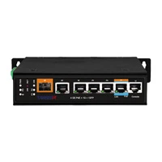
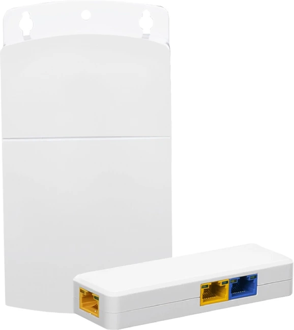
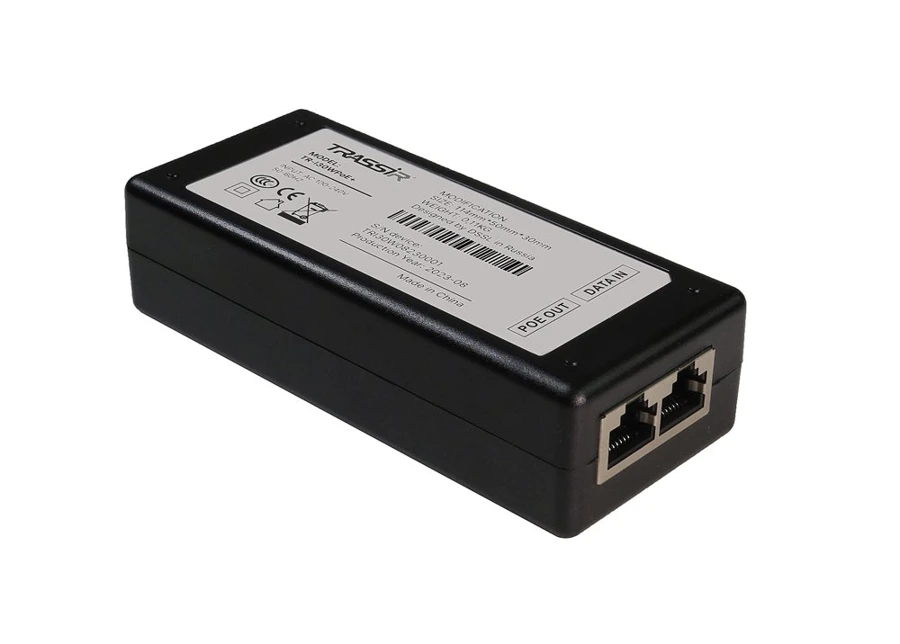
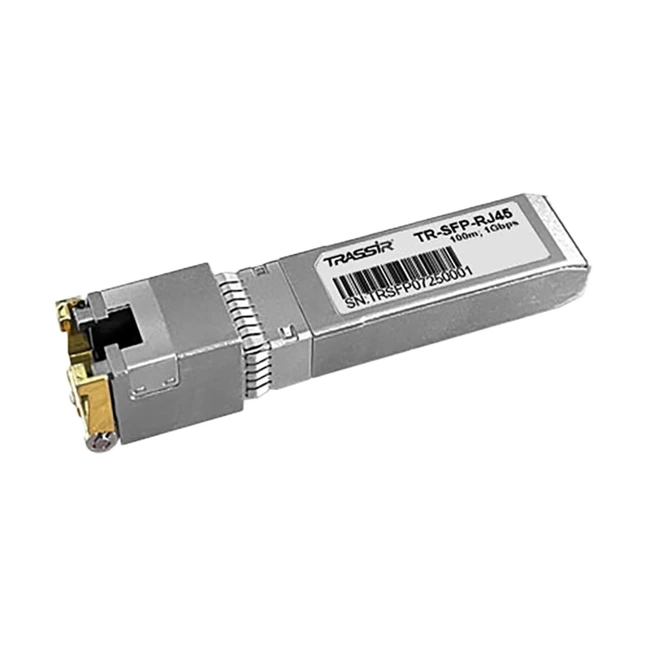

Соотношение цены и функций
Набор профессиональных возможностей с выбором конфигурации под конкретные задачи

Набор профессиональных возможностей с выбором конфигурации под конкретные задачи
Поддержка jumbo-фреймов и QoS для передачи видеопотоков и управления приоритетами трафика.
Оборудование разработано для эксплуатации при экстремальных температурах, повышенной влажности и нестабильном питании.
Питание камер и другого оборудования с потреблением до 90 Вт на порт.
От малого бизнеса до промышленных объектов — гибкая линейка Старт /Тренд /Про/ Ультра/ Промышленные
подключение камер, регистраторов и серверов для обмена данными.
обеспечение связи между источниками изображения, устройствами записи и рабочими местами.
подача питания и передача данных по одному кабелю с помощью PoE.
увеличение расстояния передачи с помощью удлинителей Ethernet/PoE и специальных режимов коммутаторов.
подключение сетевого оборудования по оптоволокну через SFP-модули.
автоматический перезапуск питания подключённого устройства в моделях с функцией PD-Alive.




Архитектуры и типовые проекты позволяют быстрее запускать систему и снижать риски при внедрении
Видеонаблюдение, видеоаналитика и контроль доступа работают в одной системе без сложных интеграций
Пилотные проекты и расширенная гарантия помогают заранее оценить эффективность системы и снизить инвестиционные риски
Система легко расширяется и интегрируется с существующими IT- и корпоративными решениями
Эксперты помогают с проектированием, внедрением и дальнейшей эксплуатацией системы
Российское производство и локальная разработка позволяют контролировать данные и соответствовать требованиям регуляторов
Подбор оборудования
От небольшой системы до сложного проекта.
Поможем выбрать подходящее решение.